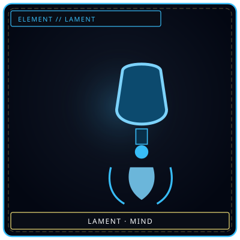
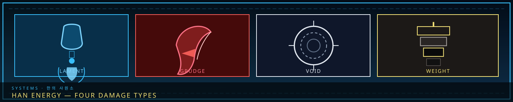

LamentMind — expressed
/// RAPID JUMP:
STATUS: ARCHIVE VERIFIED |
CLEARANCE: LEVEL-4 OVERSIGHT |
PROTOCOL: REVERIE DIRECTORATE
ARTICLE
DISCUSSION
SOURCE
HISTORY
YEAR 4,238 · DAWN OF HOPE
SYSTEMS & MECHANICS RECORD
Han Energy Physics & Four Damage Types
“Sorrow is not one thing. It is four. And each has its own teeth.”

 GrudgeBody — held
GrudgeBody — held VoidSoul — lost
VoidSoul — lost WeightHan — stacked
WeightHan — stackedThe Four Elements of Sorrow
The Four Elements of Sorrow (한의 사원소 — Han-ui Sawonso)
Sorrow itself has four elemental aspects — each affecting the world differently.
"Sorrow is not one thing. It is four. And each has its own teeth."
The Four Elements
| Element | Korean | Symbol | Color | Nature | What It Attacks |
|---|---|---|---|---|---|
| Lament | 탄식 (Tansik) | Deep Blue | Sorrow expressed — grief that weeps, mourns, releases | Mind — emotional stability, willpower | |
| Grudge | 원한 (Wonhan) | | Crimson | Sorrow held — resentment, bitterness, unresolved injustice | Body — physical form, structural integrity |
| Void | 공허 (Gongheo) | | Pale White | Sorrow lost — emptiness, numbness, absence of feeling | Soul — identity, memory, sense of self |
| Weight | 무게 (Muge) | | Black | Sorrow accumulated — the crushing pressure of Han | Han — the person's own sorrow reserves, karmic debt |
Lament (탄식) — Deep Blue
"The tears that fall are the sorrow that speaks."
Nature: Sorrow expressed — grief that weeps, mourns, releases. Lament is the sorrow that has found a voice. It is not suppressed, not denied — it is felt.
What it attacks: Mind — emotional stability, willpower, composure.
Manifestation:
- Sound-based — weeping, wailing, the tolling of bells
- Liquid — tears, rain, the dark fluid that leaks from Zone B's buildings
- Atmospheric — a heaviness in the air, a weight on the chest
Sources:
- The Orphaned Bell (tolling causes emotional breakdown)
- The Hollow Choir (songs force listeners to feel the singers' grief)
- Zone B's whispering walls (ambient lament)
- Echoes of common sorrow (grey, abundant)
Who uses it:
- Weavers — they channel Lament through the Dream
- Keepers — they preserve Lament in the Archive
- Sorrow Entities of City Sorrow origin — the city's expressed grief
Defense: Emotional resolve, willpower, community support. M.A.W. with Lament resistance.
Grudge (원한) — Crimson
"The sorrow that will not forgive has teeth."
Nature: Sorrow held — resentment, bitterness, unresolved injustice. Grudge is the sorrow that has been suppressed, denied, or refused release. It festers. It bites.
What it attacks: Body — physical form, structural integrity, flesh and bone.
Manifestation:
- Physical — wounds, burns, the dark veins of the Architect's Mark
- Structural — cracks in buildings, shattering of barriers
- Violent — the eruption of Han during the Occlusihan, the consuming nature of the Maw
Sources:
- The Maw / Cheongula (consumed 1,000 citizens — the ultimate Grudge)
- The Smothering Mother (traps children — unresolved parental grief)
- The Forgotten Soldier (forces others to remember — unresolved sacrifice)
- Debt enforcement (the Collectors' tools manifest as Grudge)
Who uses it:
- Collectors — their tools channel Grudge for debt enforcement
- Wardens — their weapons channel Grudge for combat
- Sorrow Entities of Inner Sorrow origin — personal trauma that festers
Defense: Physical resilience, armor, Han-shielding. M.A.W. with Grudge resistance.
Void (공허) — Pale White
"The worst sorrow is the one you cannot feel."
Nature: Sorrow lost — emptiness, numbness, the absence of feeling. Void is not sorrow itself, but the hole where sorrow used to be. It is what remains when grief has been consumed, erased, or forgotten.
What it attacks: Soul — identity, memory, sense of self.
Manifestation:
- Absence — silence, darkness, the fading of color
- Erasure — memory loss, identity dissolution, the forgetting of names
- Nullification — the dampening of Han, the suppression of emotion
Sources:
- The Debt Eater (consumes karmic debt but leaves victims hollow — Void)
- The Severers from the Occlusihan (emotional suppression created Void-zones)
- Fracture (the final stage — the person becomes Void)
- The Exile's Gate (one-way passage — the sorrow of being forgotten)
Who uses it:
- The Archivists — they can extract memories, leaving Void behind
- Fractureed beings — those in late-stage Fracture emit Void
- Sorrow Entities that consume or erase — the Debt Eater, the Memory Weaver
Defense: Strong sense of identity, emotional anchoring, M.A.W. with Void resistance. Dream-divers are especially vulnerable — the Dream can erase as easily as it reveals.
Weight (무게) — Black
"The sorrow that accumulates does not need to touch you. It only needs to be near."
Nature: Sorrow accumulated — the crushing pressure of Han. Weight is not expressed, not held, not lost — it is simply there. It is the structural sorrow of the city, the ambient grief of existence.
What it attacks: Han — the person's own sorrow reserves, karmic debt, the weight they already carry.
Manifestation:
- Pressure — a heaviness that increases with proximity to Han-dense areas
- Acceleration — debt increases faster, aging speeds up, luck worsens
- Accumulation — Weight adds to existing sorrow, pushing toward Fracture
Sources:
- The Grieving Colossus (tears grow buildings — Weight in physical form)
- Zone A (the Alpha Tree radiates Weight — the city's structural sorrow)
- The Desolate (semi-structured Han — Weight in transition)
- Zone B's time distortion (Weight stretches time)
Who uses it:
- Architects — they shape Han, which is concentrated Weight
- The Council — they bear the city's Weight so others don't have to
- Sorrow Entities of all categories — Weight is the base element of Han
Defense: Low existing debt, emotional balance, distance from Han-dense areas. M.A.W. with Weight resistance. The Architects' Mark is a symptom of Weight accumulation.
How the Four Elements Interact
`
LAMENT (Blue)
/ \
/ \
/ \
GRUDGE (Red) -------- VOID (White)
\ /
\ /
\ /
WEIGHT (Black)
`
Interaction table:
| Attacker ↓ / Defender → | Mind (Lament defense) | Body (Grudge defense) | Soul (Void defense) | Han (Weight defense) |
|---|---|---|---|---|
| Lament | ✗ Resisted | ◐ Partial | ● Strong | ○ Weak |
| Grudge | ◐ Partial | ✗ Resisted | ○ Weak | ● Strong |
| Void | ● Strong | ○ Weak | ✗ Resisted | ◐ Partial |
| Weight | ○ Weak | ● Strong | ◐ Partial | ✗ Resisted |
Key:
- ● Strong — effective against this defense
- ◐ Partial — partially effective
- ○ Weak — resisted, reduced damage
- ✗ Resisted — heavily resisted, minimal effect
The cycle:
- Lament beats Soul (expressed grief erodes identity)
- Grudge beats Han (resentment amplifies existing debt)
- Void beats Mind (emptiness breaks emotional stability)
- Weight beats Body (accumulated pressure crushes physical form)
The Four Elements and M.A.W.
Each M.A.W. has an elemental affinity — determined by the source entity's nature.
| M.A.W. Element | Source Entity Type | Effect |
|---|---|---|
| Lament (Deep Blue) | Grief-entities, mourning-entities | Attacks emotional stability, causes weeping |
| Grudge (Crimson) | Rage-entities, injustice-entities | Attacks physical form, causes wounds |
| Void (Pale White) | Erasure-entities, numbness-entities | Attacks identity, causes memory loss |
| Weight (Black) | Accumulation-entities, structural-entities | Attacks Han reserves, accelerates debt |
Dual-element M.A.W.: Some entities carry two elements — e.g., The Smothering Mother is Grudge + Lament (unresolved grief that physically suffocates).
The Four Elements and the Three Sorrows
| Element | City Sorrow | Outside Sorrow | Inner Sorrow |
|---|---|---|---|
| Lament | Common — the city's expressed grief | Moderate — wilderness mourning | Common — personal weeping |
| Grudge | Common — institutional resentment | Common — wild rage | Common — personal bitterness |
| Void | Moderate — the city's erased histories | Common — the unknown's erasure | Common — personal emptiness |
| Weight | Dominant — the city IS Weight | Moderate — ambient wilderness Han | Common — personal debt |
Key insight: City Sorrow is primarily Weight — the city's structural sorrow is the accumulated pressure of all grief. Outside Sorrow is more Grudge and Void — wild rage and the erasure of the unknown. Inner Sorrow is balanced across all four — personal grief manifests in every form.
Classification
Entity codes do not live on this damage page. Use SECC — classification codes only. SCS (Dohan/Oehan/Naehan) is superseded; origin letters are C / O / N. This article stays on the four elemental aspects of sorrow as damage: Lament, Grudge, Void, Weight.
CANONICAL RECORD: Sourced directly from the official Project Somnarak Worldbuilding Codex.
CANONICAL CROSS-LINKS & ATLAS CONNECTIONS